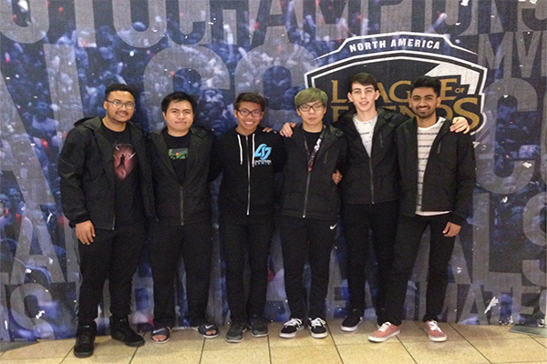
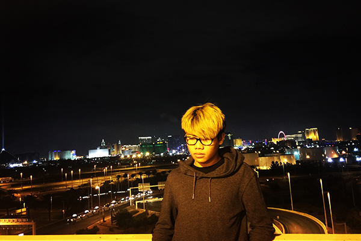

Age: 13
Photoshoot for my League of Legends professional debut in Korea (more information about that in the interest section)
Age: 15
Meeting my favorite North American League of Legends team, Counter Logic Gaming, at Mandalay Bay for the Spring Split Finals
Age: 16
New Years Eve pic with the Las Vegas Strip in the background. (Yes I dyed my hair blonde)
What's up, my name is Thurein (pronounced: "the rain") and I'm a 16 year old junior just trying to survive high school and advance up to college. I was born on October 20, 2000 in a place called Mandalay, Myannmar, in Southeast Asia. I moved to America in 2006 and have lived in Las Vegas ever since. I grew up in the US and even though I can speak the Burmese language and it's my heritage, I'm basically more American than I am Burmese. Currently, I'm a student in the web design program at Southwest Career and Technical Academy. I always had good grades throughout my academic career and somehow I've still managed to mantain a 3.8 GPA. I joined the web design program because I thought computers were really cool when I was younger, but my thought process changed with age and now I plan to become a radiologist. I want to major pre med at either the University of Washington or the University of Reno and eventually get into med school.
Growing up, I was always a nerd. I was the kid with the binders filled with trading cards, that watched anime and played video games in his room all day. I dropped the trading cards and anime as I grew up, but gaming stuck with me throughout the years and I still tend to game regularly as of today. I started out with consoles such as the PS1, PS2, and XBOX 360. When I was 10, my dad gave me a laptop as a suprise birthday present. Shortly after, I got addicted to a game called League of Legends and I became pretty good at it. I became so good that I became a sub for a professional Korean League of Legends team, Najin Emfire, due to the fact that I had to be 17 to play in the professional North American League. Even though I was on a Korean team, my teammates spoke really good English and it was a very comfortable environment for me. I was only a sub, but I got to play 1 set (a total of 3 games) where I got a penta in one of them (the clip is down below). We lost the set and I didn't play any more games afterwards since the starting player got better, but it was still a really cool experience. My parents didn't support the whole pro gaming thing and only let me go that one time, so I decided to retire as a pro and just play casually. Besides gaming, I really enjoy playing basketball, watching movies, and listening to music. I'm a total Star Wars and Harry Potter geek. I'm really into rap and kpop. My favorite rapper is a tie between Eminem and Kanye West, while my favorite Kpop group is BIGBANG. Taking into account everything I just told you, I'm basically just a regular white washed Asian kid that likes to play video games and listen to rap music.
+This is my one and only good play during my professional League of Legends career